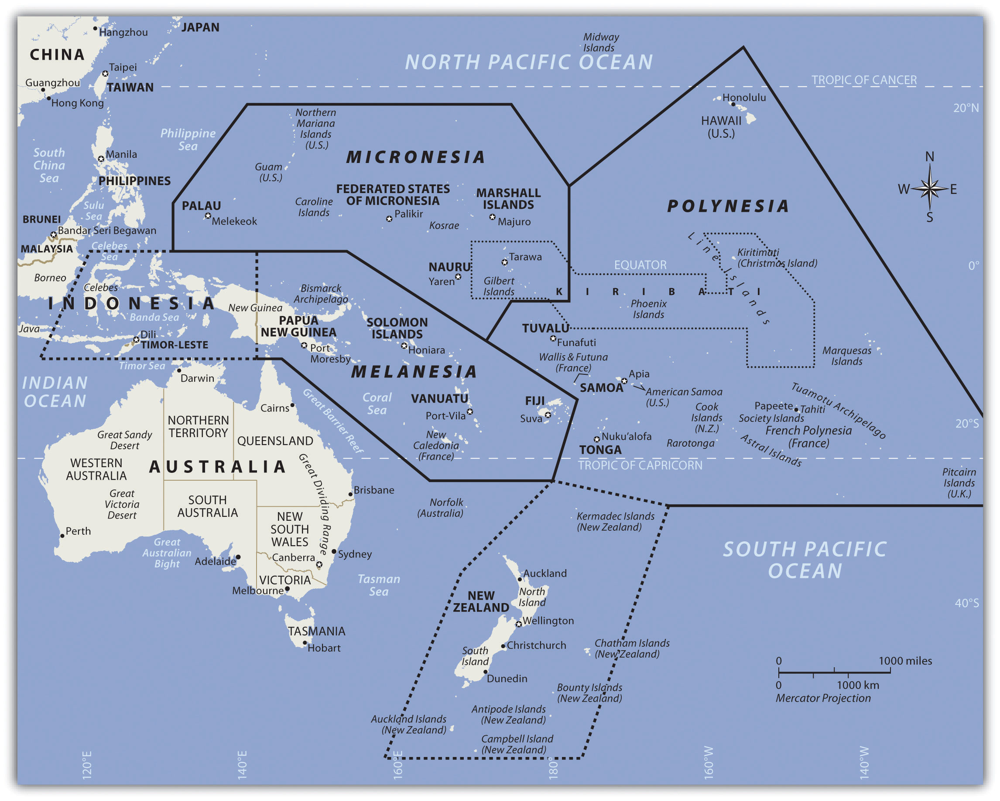
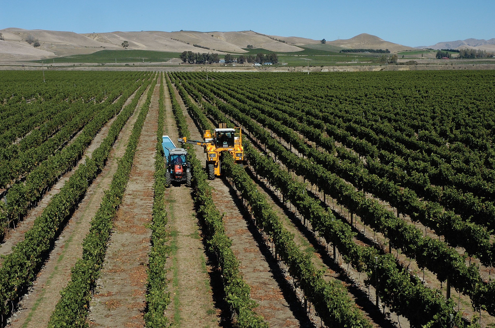
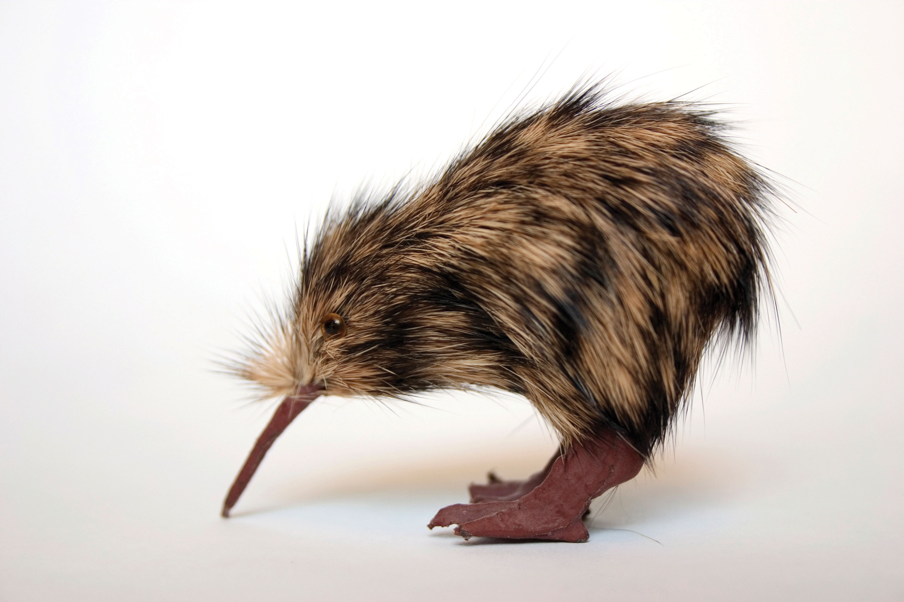

At a Glance
At a Glance
Learning Outcomes
- Remember: Identify Australia's major physical regions and locate the three Pacific Island sub-regions (Melanesia, Micronesia, Polynesia).
- Understand: Explain how tectonic isolation produced Australia's unique biogeography, including marsupials, monotremes, and eucalyptus-dominated ecosystems.
- Analyze: Examine how European colonization disrupted Aboriginal Australian and Maori societies, and evaluate modern reconciliation efforts.
- Evaluate: Assess the existential threat of sea-level rise to low-lying Pacific atoll nations and its implications for sovereignty and international law.
- Apply: Apply the concept of the "Tyranny of Distance" to explain patterns of economic development, trade, and geopolitical alignment across the region.
Key Terms
Biogeography, Outback, Atoll, Aboriginal Australians, Maori, Exclusive Economic Zone (EEZ), Great Barrier Reef, Wallace's Line, Melanesia, Micronesia, Polynesia, Marsupial, Tyranny of Distance, Terra Nullius.
Stop & Check
Reveal Answer
Common Misconception
Myth: Australia is entirely desert.
Fact: While the vast interior ("Outback") is arid, Australia's coastal fringes, especially the eastern seaboard and the southwest, have temperate and tropical climates. Over 85% of Australians live within 50 kilometers of the coast, in some of the world's most livable cities.
Regional Snapshot: Australia and Oceania at a Glance
This region spans the vast Pacific Ocean, from the Australian continent, the world's smallest and flattest, to over 25,000 islands scattered across an ocean that covers more of Earth's surface than all the land combined. The region is traditionally divided into four sub-regions: Australia, Melanesia (including Papua New Guinea, Fiji, Solomon Islands), Micronesia (tiny islands north of the equator), and Polynesia (the vast triangle from Hawaii to New Zealand to Easter Island). New Zealand, though geographically Polynesian, shares many characteristics with Australia due to its British colonial heritage.

Interactive Map: Australia and Oceania
Explore the vast distances of Oceania. Notice how Australia dominates the landmass while thousands of islands are scattered across an ocean area larger than the entire African continent. Zoom in to see the isolation that has shaped this region's unique geography.
Click on city markers to learn about key urban centers. Notice the extreme concentration of population along Australia's eastern coast and the vast empty distances of the interior.
Physical Geography: An Ancient Land and a Young Ocean
The physical geography of this region is defined by extraordinary contrasts. Australia is the world's oldest, flattest, and driest inhabited continent, its rocks dating back over 3 billion years. New Zealand, by comparison, sits on an active plate boundary and is one of Earth's youngest major landmasses. The Pacific Islands range from towering volcanic peaks to coral atolls barely visible above the waves. Understanding these physical foundations is essential to grasping why this region developed such unique ecosystems and why it now faces unprecedented environmental challenges.


Australia: The Ancient Shield
Australia sits at the center of the Indo-Australian Plate, far from any active tectonic boundary. This geological stability means that the continent has no active volcanoes and experiences few earthquakes. Over hundreds of millions of years, erosion has worn down ancient mountain ranges into low plateaus and flat plains. The Great Dividing Range along the eastern coast, Australia's most significant mountain system, barely reaches 2,200 meters, modest compared to the Andes or Himalayas.
The continent's interior, known as the Outback, is dominated by arid and semi-arid landscapes. The Simpson Desert, Great Victoria Desert, and Gibson Desert cover vast areas of the interior. Australia receives less rainfall on average than any inhabited continent, and much of its drainage is endorheic (flowing inland rather than to the sea). Lake Eyre, the continent's lowest point at 15 meters below sea level, fills with water only a few times per century during rare flood events.
The Great Barrier Reef
Off Australia's northeast coast lies the Great Barrier Reef, the world's largest coral reef system, stretching over 2,300 kilometers and visible from space. Composed of nearly 3,000 individual reef systems and hundreds of islands, it supports an extraordinary diversity of marine life, including over 1,500 species of fish, 400 types of coral, and endangered species such as the dugong and green sea turtle.
The reef is under severe threat from coral bleaching caused by rising ocean temperatures. Mass bleaching events in 2016, 2017, 2020, and 2022 damaged over half of the reef's coral cover. Scientists warn that if global temperatures rise more than 1.5 degrees Celsius above pre-industrial levels, the reef could lose most of its living coral. The economic stakes are enormous: the reef generates over $6 billion annually in tourism revenue and supports approximately 64,000 jobs.
New Zealand: The Shaky Isles
New Zealand straddles the boundary between the Pacific and Australian tectonic plates, making it one of the most geologically active places on Earth. The North Island features volcanic landscapes, including the Taupo Volcanic Zone with its geothermal hot springs, geysers, and the occasionally explosive Mount Ruapehu. The South Island is dominated by the Southern Alps, a chain of mountains created by the collision of the two plates, with glaciers carving dramatic fjords along the southwestern coast.
This tectonic activity brings significant seismic risk. The 2011 Christchurch earthquake (magnitude 6.3) killed 185 people and destroyed much of the city center, a reminder that New Zealand's dramatic landscapes come with inherent dangers. The country's volcanic soils, however, support productive agriculture, and its abundant rainfall and temperate climate make it one of the world's most productive pastoral economies.
Pacific Islands: High and Low
The thousands of islands scattered across the Pacific are classified into two fundamental types based on their geological origin. High islands are volcanic in origin, formed by magma rising from hotspots or subduction zones. These islands, such as Fiji, Samoa, and Papua New Guinea, have mountainous terrain, fertile volcanic soils, abundant freshwater, and can support substantial populations. Papua New Guinea alone has over 9 million people and some of the world's highest linguistic diversity, with over 800 languages spoken.
Low islands are coral atolls, ring-shaped reefs formed around the rim of a subsiding volcanic island. As the volcano sinks below the sea surface, the coral continues to grow upward, leaving a ring of land surrounding a central lagoon. These atolls, such as those making up Tuvalu, Kiribati, and the Marshall Islands, rarely rise more than 2 to 3 meters above sea level. Their limited area, thin soils, and dependence on rainfall for freshwater make them among the most vulnerable places on Earth to climate change.
Antarctica: The Frozen Continent
Although not typically grouped with Oceania, Antarctica is the southernmost continent and exerts a profound influence on the entire Pacific region through ocean currents and climate systems. Covering 14 million km², Antarctica holds approximately 70% of the world's freshwater, locked in an ice sheet that averages 2.16 kilometers in thickness. If this ice were to melt entirely, global sea levels would rise by an estimated 58 meters.
No country owns Antarctica. The Antarctic Treaty System (1959), signed by 54 nations, designates the continent as a scientific preserve and bans military activity and mineral mining. Research stations from dozens of countries study climate change, ozone depletion, and unique ecosystems. The continent's ice cores provide some of the most valuable records of Earth's past climate, containing air bubbles that preserve atmospheric composition going back 800,000 years.
Geographic Inquiry
Australia and Antarctica were once joined as part of the supercontinent Gondwana. They began separating approximately 45 million years ago. How did this tectonic separation contribute to Australia's unique biogeography? Consider: (1) the evolution of marsupials in isolation, (2) the development of Antarctica's ice sheet after separation, and (3) how ocean currents changed as the continents drifted apart.
Human Geography: Peoples of the Pacific World
The human geography of Australia and Oceania is shaped by two defining forces: the ancient, continuous occupation of the land by Indigenous peoples, and the relatively recent arrival of European colonizers. The tension between these two histories, between deep connection to place and the disruptions of colonialism, continues to define the region's political and cultural landscape today.
Aboriginal Australians: The World's Oldest Living Culture
Aboriginal Australians have inhabited the continent for at least 65,000 years, making theirs the longest continuous cultural tradition on Earth. When the first humans arrived, likely crossing land bridges and short sea passages from Southeast Asia during lower sea levels, they found a continent of megafauna, including giant marsupials, enormous reptiles, and flightless birds. Over millennia, Aboriginal peoples developed sophisticated land management practices, most notably the use of fire-stick farming, the deliberate burning of vegetation to promote new growth, manage wildlife, and prevent catastrophic wildfires.
Before European contact, an estimated 250 to 300 distinct language groups existed across the continent, each with its own territory, laws, and spiritual traditions tied to the land through the system known as the Dreaming (or Dreamtime). This complex belief system connects people, animals, and landscape features to ancestral creation beings, making the land itself a living archive of cultural knowledge. European colonization, beginning with the British First Fleet in 1788, devastated Aboriginal societies through violence, disease, dispossession, and the forced removal of children from their families (the "Stolen Generations"). The legal fiction of terra nullius denied Aboriginal land ownership until the Mabo decision of 1992.
Pacific Islander Cultures and Polynesian Navigation
The settlement of the Pacific Islands represents one of the greatest feats of human navigation in history. Beginning around 3,000 years ago, Austronesian peoples spread from Southeast Asia through Melanesia and out into the open Pacific, eventually reaching Hawaii, Easter Island (Rapa Nui), and New Zealand. These voyages, covering thousands of kilometers of open ocean in double-hulled canoes, were accomplished without instruments, using knowledge of stars, ocean currents, wave patterns, and the flight paths of birds.
The Maori of New Zealand, who arrived from eastern Polynesia around 1250-1300 CE, developed a distinctive culture adapted to New Zealand's temperate climate, one very different from the tropical islands their ancestors left. Their social structure, centered on the whanau (extended family), hapu (sub-tribe), and iwi (tribe), maintained deep connections to specific territories and resources. The Treaty of Waitangi (1840), signed between the British Crown and Maori chiefs, remains a contested but foundational document in New Zealand's bicultural identity. Unlike Australia's terra nullius approach, New Zealand at least acknowledged Indigenous sovereignty, even if the treaty's terms were frequently violated.
Colonization and Modern Immigration
European colonization transformed Australia, New Zealand, and many Pacific Islands from Indigenous-governed territories into settler societies modeled on British institutions. Australia's colonial history is particularly complex. Initially established as a penal colony in 1788, it attracted free settlers through the gold rushes of the 1850s and eventually federated as a nation in 1901. For much of the 20th century, Australia maintained the "White Australia" policy (formally the Immigration Restriction Act of 1901), which effectively barred non-European immigration until it was dismantled between 1966 and 1973.
Since then, Australia has become one of the world's most multicultural societies. Approximately 30% of Australians were born overseas, with significant communities from China, India, the Philippines, Vietnam, and the United Kingdom. Today, Sydney and Melbourne are among the most ethnically diverse cities in the Asia-Pacific region. New Zealand has followed a similar trajectory, with significant immigration from Pacific Island nations (Samoa, Tonga, Cook Islands) as well as from Asia, creating a society that is approximately 70% European, 17% Maori, 15% Asian, and 8% Pacific Islander (with overlapping categories).
Urbanization and the Tyranny of Distance
Australia is one of the most urbanized countries in the world, with over 85% of its population living in coastal cities. The five largest cities, Sydney, Melbourne, Brisbane, Perth, and Adelaide, together contain over 60% of the national population. This extreme coastal concentration reflects both the aridity of the interior and the historical importance of ports for trade with Britain and, increasingly, with Asia. Geographer Geoffrey Blainey coined the phrase "Tyranny of Distance" to describe how Australia's remoteness from European markets shaped its economic development, cultural identity, and political alignments.
In the Pacific Islands, urbanization is accelerating rapidly, particularly in Melanesia. Port Moresby (Papua New Guinea), Suva (Fiji), and Noumea (New Caledonia) face challenges common to rapidly growing cities in developing countries: inadequate infrastructure, informal settlements, unemployment, and pressure on water and sanitation systems. The contrast between urban growth and the traditional village-based life of most Pacific Islanders creates social tensions around land rights, employment, and cultural change.
Economic Geography: Mining, Tourism, and the Sea
Australia's economy is dominated by its vast mineral wealth. The country is the world's largest exporter of iron ore, a major producer of coal, gold, lithium, and natural gas, and possesses some of the world's largest reserves of uranium. The mining sector generates enormous export revenue, particularly from sales to China, Japan, and South Korea. However, this resource dependence creates vulnerability to commodity price swings and raises environmental concerns about mining's impact on landscapes and groundwater systems.
For the Pacific Island nations, the ocean itself is the primary economic resource. Many small island states control enormous Exclusive Economic Zones (EEZs) that extend 200 nautical miles from their coastlines, giving them jurisdiction over vast areas of ocean rich in tuna and other fish stocks. Fishing license fees paid by distant-water fishing fleets (from Japan, China, the United States, and Europe) provide a significant share of national income for countries like Kiribati and the Marshall Islands. Tourism is another pillar, particularly for Fiji, French Polynesia, and Palau, but it brings challenges of environmental degradation, cultural commodification, and economic dependence on external visitors.
Data Exploration: Sea Level Rise Threat Index
The following chart shows the average elevation (in meters above sea level) of Pacific Island nations compared to projected sea level rise by 2100 under a high-emissions scenario (approximately 1 meter). Nations whose average elevation approaches or falls below this threshold face existential risk to their territory, freshwater supplies, and agricultural land.
Interpretation: The red dashed line represents the projected 1-meter sea level rise by 2100. Nations below or near this line face the loss of habitable land. Notice how the atolls of Tuvalu, Kiribati, and the Marshall Islands are the most vulnerable, while higher volcanic islands like Fiji and Papua New Guinea have more geographic resilience. How does this data connect to debates about climate justice and international responsibility?
The Great Barrier Reef: Managing a World Heritage Site Under Threat
The Great Barrier Reef, spanning 2,300 kilometers along Australia's northeast coast, is the largest living structure on Earth and a UNESCO World Heritage Site since 1981. It supports extraordinary biodiversity and generates over $6 billion annually in tourism revenue. Yet the reef is in crisis. Four mass coral bleaching events between 2016 and 2022 have damaged or destroyed over half of the reef's shallow-water corals.
Coral bleaching occurs when ocean temperatures rise above the normal range, causing corals to expel the symbiotic algae (zooxanthellae) that provide them with food and color. Without these algae, the coral turns white and, if conditions persist, dies. The root cause is anthropogenic climate change: ocean temperatures in the Coral Sea have risen by approximately 0.8 degrees Celsius since 1900. Agricultural runoff carrying fertilizers and sediment from Queensland's coastal farms further stresses the reef.
The Australian government has committed over $1 billion to reef protection through the Reef 2050 Plan, funding water quality improvement, crown-of-thorns starfish control, and coral restoration research. However, critics argue that these efforts are insufficient without aggressive action on carbon emissions, noting that Australia remains one of the world's largest coal exporters and per-capita carbon emitters.
Questions to Consider:
- How does the tension between Australia's coal export economy and its commitment to reef conservation illustrate the concept of sustainable development?
- Who bears responsibility for saving the Great Barrier Reef: Australia alone, or the global community that contributes to climate change?
- How might the loss of the reef affect not only marine ecosystems but also the economic geography of coastal Queensland?
- Aboriginal Australians
- The Indigenous peoples of the Australian continent, whose cultures represent the world's oldest continuous cultural traditions, dating back at least 65,000 years.
- Antarctic Treaty System
- An international agreement (1959) designating Antarctica as a scientific preserve, banning military activity and mineral exploitation on the continent.
- Atoll
- A ring-shaped coral reef, including a coral rim that encircles a lagoon, formed around a subsiding volcanic island. Examples include Kiribati and the Marshall Islands.
- Biogeography
- The study of the distribution of species and ecosystems across geographic space and through geological time, explaining patterns of biodiversity.
- Coral Bleaching
- The whitening of coral caused by the expulsion of symbiotic algae (zooxanthellae) due to environmental stress, particularly elevated ocean temperatures.
- Exclusive Economic Zone (EEZ)
- A maritime zone extending 200 nautical miles from a nation's coastline, within which that state has special rights over the exploration and use of marine resources.
- Great Barrier Reef
- The world's largest coral reef system, stretching over 2,300 kilometers along Australia's northeast coast and supporting extraordinary marine biodiversity.
- Maori
- The Indigenous Polynesian people of New Zealand, who arrived from eastern Polynesia around 1250-1300 CE and developed a distinctive culture centered on kinship, land, and sea.
- Marsupial
- A mammal that carries its young in a pouch. Marsupials dominate Australia's native mammal fauna due to the continent's long tectonic isolation from other landmasses.
- Melanesia
- A Pacific Island sub-region extending from Papua New Guinea to Fiji, characterized by high islands, great ethnic and linguistic diversity, and large land areas relative to other Pacific sub-regions.
- Outback
- The vast, remote, and predominantly arid interior of Australia, characterized by sparse population, pastoral land use, and iconic red landscapes.
- Terra Nullius
- A Latin term meaning "land belonging to no one," used by the British to justify the colonization of Australia without negotiating treaties with Aboriginal peoples. Overturned by the Mabo decision in 1992.
- Tyranny of Distance
- A concept describing how Australia's geographic remoteness from major global markets shaped its economic development, trade patterns, and cultural identity.
- Wallace's Line
- A biogeographical boundary running between Borneo and Sulawesi and between Bali and Lombok, separating the animal species of Asia from those of Australia.
- Ancient Isolation: Australia's separation from Gondwana millions of years ago produced a continent of unique biodiversity, including marsupials and monotremes found nowhere else on Earth. Wallace's Line marks the boundary between Asian and Australian species.
- Geological Contrasts: Australia is the world's oldest, flattest, and driest inhabited continent, while New Zealand is geologically young and active. The Pacific Islands range from high volcanic islands with fertile soils to low coral atolls barely above sea level.
- The Great Barrier Reef: The world's largest coral reef system faces existential threat from coral bleaching driven by climate change, agricultural runoff, and ocean acidification. Its health is a global indicator of marine ecosystem resilience.
- Indigenous Continuity: Aboriginal Australians maintain the world's oldest living culture (65,000+ years). Their dispossession through terra nullius and the Stolen Generations remains one of colonialism's most profound injustices, only partially addressed by the Mabo decision and ongoing reconciliation efforts.
- Polynesian Navigation: The settlement of the Pacific Islands represents one of humanity's greatest navigational achievements, accomplished without instruments over thousands of kilometers of open ocean using stars, currents, and wave patterns.
- Climate Frontline: Low-lying Pacific atoll nations like Tuvalu and Kiribati face existential threats from sea-level rise, raising unprecedented questions about sovereignty, climate refugees, and international legal frameworks.
- Resource Economies: Australia's wealth derives heavily from mining (iron ore, coal, LNG, gold), while Pacific Island economies depend on fishing rights within their vast EEZs and on tourism. Both face challenges of sustainability and diversification.
- Tyranny of Distance: Geographic remoteness has shaped the region's economic development, trade relationships, and geopolitical alignments, driving Australia and New Zealand toward closer ties with Asia despite their European cultural heritage.
- Antarctica as Climate Archive: The frozen continent holds 70% of the world's freshwater and its ice cores provide 800,000 years of climate records. The Antarctic Treaty System represents a model of international scientific cooperation.
Sinking Islands: Climate Refugees and National Sovereignty
Kiribati, Tuvalu, and the Marshall Islands are among the world's lowest-lying nations, their highest points barely 2 meters above sea level. Rising seas are already contaminating freshwater supplies, eroding coastlines, and making some islands uninhabitable. These nations face a question no country has ever confronted before: what happens to a nation when its land disappears?
Role A: Kiribati Government
You have already purchased land in Fiji as a potential relocation site. But your people resist leaving: their identity, culture, and ancestral connections are tied to these islands. You demand that major carbon-emitting nations pay for the damage they caused and fund your adaptation efforts.
Role B: Australia
You are the region's largest economy and a major coal exporter. You have offered limited climate aid but resist binding emissions targets that could harm your mining industry. You face pressure to accept Pacific climate refugees but worry about setting a precedent for mass migration.
Role C: New Zealand
You have created a special visa category for Pacific climate migrants. You see yourself as a Pacific nation with obligations to your neighbors. You want Australia to do more and support stronger international climate finance mechanisms.
Role D: UN Climate Negotiator
You must address an unprecedented legal question: if a nation's territory disappears, does it retain its UN seat, its EEZ fishing rights, and its international legal status? You must propose a framework for "stateless nations" that the international community can accept.
Knowledge Check
Test your understanding of the core concepts covered in this chapter. This quiz consists of multiple-choice questions designed to review key terms, regional patterns, and geographic relationships. Select the best answer for each question to receive immediate feedback.
Loading quiz questions...
Discussion and Reflection Prompts
Reflect on Your Learning
- Biogeography and Isolation: How has geographic isolation over millions of years shaped the unique ecosystems of Australia and the Pacific? What threats do invasive species, habitat destruction, and climate change pose to these ecosystems today?
- Island Vulnerability: Why are Pacific Island nations at existential risk from climate change, despite having contributed virtually nothing to global carbon emissions? What ethical obligations do wealthy, high-emitting nations have?
- Indigenous Knowledge: Aboriginal Australians developed sophisticated land management techniques over 65,000 years, including fire-stick farming. How might this Indigenous ecological knowledge contribute to modern environmental management and bushfire prevention?
Discuss With Your Peers
- What does climate justice look like for island nations facing displacement? Should there be a new international legal category for "climate refugees"?
- Australia transitioned from the "White Australia" policy to one of the world's most multicultural societies within a single generation. What geographic, economic, and political factors drove this transformation?
- The Antarctic Treaty bans resource extraction and designates the continent for science. As mineral resources become scarcer, do you think this treaty will endure? What geographic factors make Antarctica both attractive and forbidding for resource exploitation?
Curriculum Standards Alignment
This chapter aligns with the following National and State geography standards.